Carpetplot Class Example Plots
These are some examples plots made with the carpetplot class.
Contents
Simple Example
In the beginning a simple example. More details about creating and labeling a carpet plot will be illustrated in the following examples.
set(gcf,'Renderer','OpenGL') a = 1:0.25:2; b = 1:20:100; [A B] = meshgrid(a,b); Y = A.*B; o = carpetplot(A,B,Y); label(o,'A-Axis','B-Axis') grid on;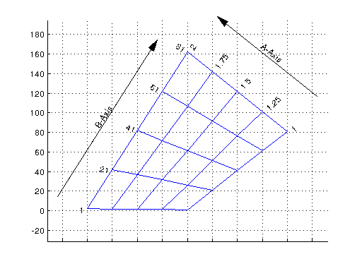
Input Data
The carpetplot class supports different kind of input data. The data can be exact (a matrix containing all datapoints) or scattered data. In this case the data points will be interpolated using TriScatteredInterp.
There are two different types of carpet plots:
The cheater plot
obj = carpetplot(a,b,Y) obj = carpetplot(a,b,Y,z)
The (real) carpet plot
obj = carpetplot(a,b,X,Y) obj = carpetplot(a,b,X,Y,z)
In case of exact data A and B can be eather vectors or meshgrids.
If the input data are scattered data points a,b,(x) and y must be vectors with the corresponding coordinates of the datapoints.
The z parameter is only used for the interpolation of whole carpet plots or lattice plots.
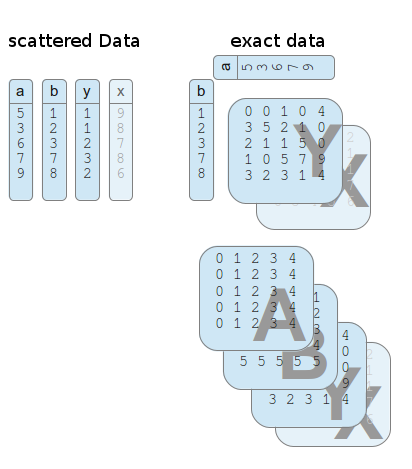
A plot using exact data input and Meshgrids
warning off; % Suppress warnings (optional) a = linspace(1,100,30); b = linspace(100,200,20); [A B] = meshgrid(a,b); X = A.^2+B; Y = A+B; o = carpetplot(A,B,X,Y);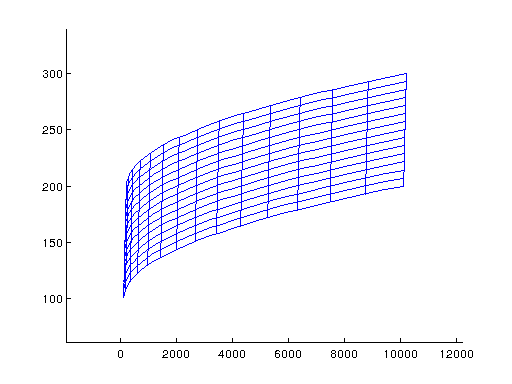
Using the vectors for a and b has the same effect
clf; warning off; % Suppress warnings (optional) a = linspace(1,100,30); b = linspace(100,200,20); [A,B] = meshgrid(a,b); X = A.^2+B; Y = A+B; o = carpetplot(a,b,X,Y);
Scattered data
clf; a = [1 1 1 2 2 2 3 3 3]; b = [10 20 30 10 20 30 10 20 30]; X = a.^2+a; Y = a+b; o = carpetplot(a,b,X,Y);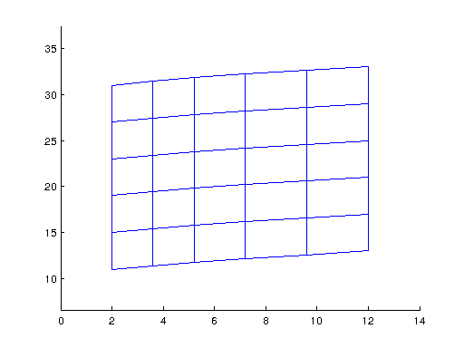
Curve Fitting
In the default case the interpolations of the carpet plot will be calculated and connected with a straight line.
This linear curve will produce a cornered carpet if you do not have a lot of intersections.
To avoid this use the spline and pchip methods to produce curved lines with the given intersections.
Alternatively if you have a lot of data points but only wan't to vizualize a few intersections it is recommended to use the exact methods epchip or espline pr elinear as these methods consider all input datapoints for plotting.
The following example illustrates the different effects of the curve fitting methods.
a = linspace(-.5,1,50); b = linspace(-1,6,14); [A,B] = meshgrid(a,b); Y = A.^3+B; X = A-B*.2; Y(1,4) = Y(1,4)-0.1; clf; hold on; oinput = carpetplot(A,B,X,Y,'o','Color',[0.2 0.2 0.2]); set(oinput,'aTick',linspace(-.5,1,50),'bTick',linspace(-1,6,14)) ospline = carpetplot(A,B,X,Y,'-','Color',[1 0 0]); olinear = carpetplot(A,B,X,Y,'-','Color',[0.5 1 0.5]); set(olinear,'curveFitting','linear','aTick',linspace(-.5,1,5)) set(ospline,'curveFitting','spline','aTick',linspace(-.5,1,5)) opchip = carpetplot(A,B,X,Y,'-','Color',[0 1 0]); set(opchip,'curveFitting','pchip','aTick',linspace(-.5,1,5)) oepchip = carpetplot(A,B,X,Y,'-','Color',[0 0 1]); set(oepchip,'curveFitting','epchip','aTick',linspace(-.5,1,5)) oespline = carpetplot(A,B,X,Y,'-','Color',[1 1 0]); set(oespline,'curveFitting','espline','aTick',linspace(-.5,1,5)) oelinear = carpetplot(A,B,X,Y,'-','Color',[0 1 1]); set(oelinear,'curveFitting','elinear','aTick',linspace(-.5,1,5)) legend([oinput olinear ospline opchip oepchip oespline oelinear] ... ,'Input Data','linear','Spline','Pchip','Exact pchip','Exact Spline','Exact Linear'); xlim([-0.32 0.1]); ylim([-1.17 -0.86])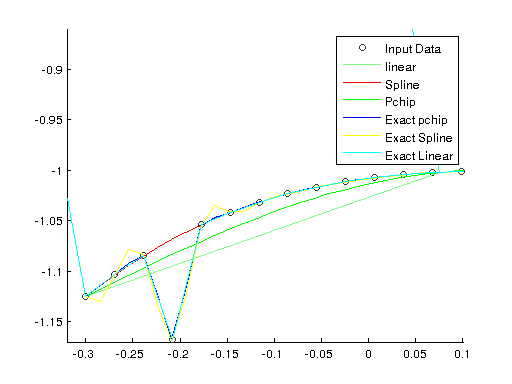
As you can see all curve fitting methods have their trade offs. pchip and spline don't consider the points between the intersections.
linear just draws a straight line.
The Exact Methods consider all points but are only usable if you have a lot of input data. espline especially with the data anomaly swings out a lot.
Cheater Plots
Cheater plots do not have an x axis. The x-values for the vizualisation will calculated using
X = k0 + a*K1 + b*K2
The K values controll the plotting direction of the plot and as default the intersections align vertically. The allignement does only work if the a and b values are equally spaced.
clf; aValues = [1 1 1 2 2 2 3 3 3]; bValues = [10 15 20 10 15 20 10 15 20]; Y = aValues+bValues; o = carpetplot(aValues,bValues,Y); label(o); set(o,'style','clean','alabelspacing',0.15); [arrowH,textH] = cheaterlegend(o,'northwest'); grid on;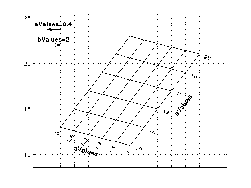
Use get and set to change the K Values. The Intersections will not allign vertically anymore.
delete(arrowH,textH) set(o,'K1',get(o,'K1')*3) cheaterlegend(o,'northwest'); grid on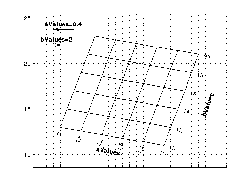
Multiple Plots
The carpetplot class supports multiple plots. They can just be plotted into one figure by using the hold on command.
clf; a =[1;2;3;1;2;3]; b =[10;10;10;30;30;30]; x = b-a.^3; y = a.*b; hold on; o1 = carpetplot(a,b,x,y,10); o2 = carpetplot(a,b,x+40,y+40,22); o3 = carpetplot(a,b,x+190,y+15,34); zlabel(o1,'Plot1 (z=10)'); zlabel(o2,'Plot2 (z=22)'); zlabel(o3,'Plot3 (z=34)'); [hlines hmarkers htext] = showpoint(o1,o2,o3,1.7,23); snapnow; %Only needed for publishing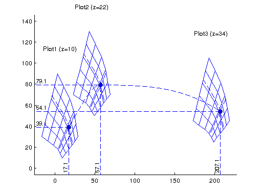
A whole plot can be interpolated. The showpoint lines and text can be deleted using the handles.
delete(hlines); delete(hmarkers); delete(htext); oi = interpolateplot(o1,o2,o3,30); set(get(oi,'aLines'),'color',[0.5 0.5 0.5],'LineStyle','--'); set(get(oi,'blines'),'color',[0.5 0.5 0.5],'LineStyle','--'); snapnow; %Only needed for publishing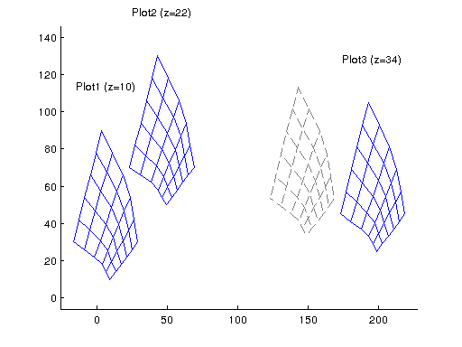
Altough cheater plot's do not have an x-axis multiple carpets can be plotted using the lattice method. The x-axis shifting of the plot will represent the plot's z-value.
clear; clf; a = linspace(1,10,3); b = linspace(10,30,3); [A B] = meshgrid(a,b); X1 = A.*B; X2 = (A.*B).*2; X3 = (A.*B).*3; hold on; o1 = carpetplot(A,B,X1,-124); set(o1,'style','standard'); o2 = carpetplot(A,B,X2,500); set(o2,'k0',20,'style','standard') o3 = carpetplot(A,B,X3,3000); set(o3,'k0',40,'style','standard') alabel(o3); blabel(o1); lLines = lattice(o1,o2,o3,'lines'); set(lLines,'LineWidth',0.5);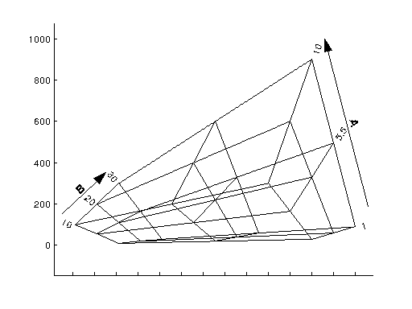
Styles
The carpetplot class supports the possibility to customize the carpet plot with built in styles as well as with custom parameters.
hold off; clear; clf; a = linspace(1,10,3); b = linspace(10,30,3); [A B] = meshgrid(a,b); X = A+3.*B; o = carpetplot(A,B,X); label(o); title('carpet plot with standard parameters') snapnow; %Only needed for publishing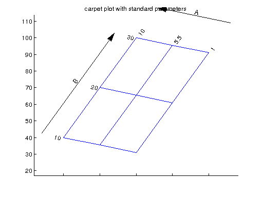
o = carpetplot(A,B,X,'ko--'); label(o); title('carpet plot with custom line spec') snapnow; %Only needed for publishing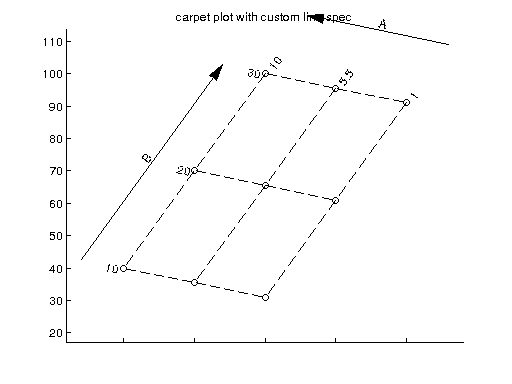
o = carpetplot(A,B,X); label(o); set(o.alines,'color',[1 0 0],'linestyle',':') snapnow; %Only needed for publishing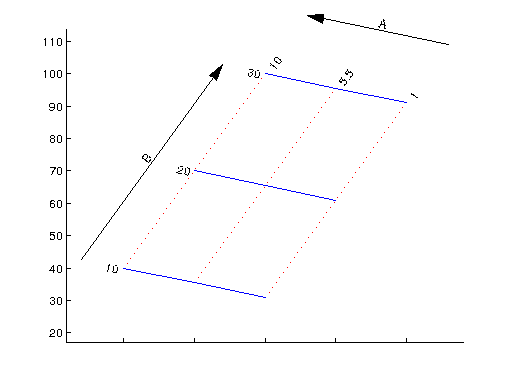
o = carpetplot(A,B,X); label(o); set(o,'style','standard'); title('Standard Style'); snapnow; %Only needed for publishing set(o,'style','basic'); title('Basic Style'); snapnow; %Only needed for publishing set(o,'style','minimal'); title('Minimal Style'); snapnow; %Only needed for publishing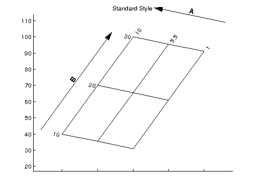 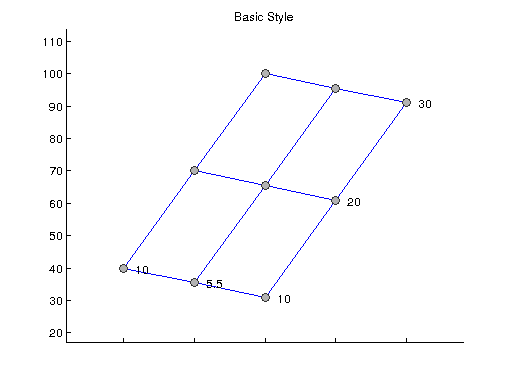 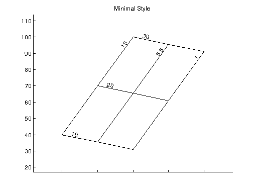
Transform coordinate Systems
The carpetpot class has three build in functions to draw hatchedlines, line plots, and filled contours into the a b coordinate systems. If there are other plots needed it is possible to transform any vectors or matrixes into the carpet plot's coordinate system
x = linspace(-0.5,10,200); rng(0,'twister'); y = 10*cos(x)+ rand(1,200)+20; hold off; scatter(x,y) title('Scatter Plot in the XY coordinate system'); snapnow; %Only needed for publishing a = linspace(-.5,10,5); b = linspace(-1,40,4); [A,B] = meshgrid(a,b); Y = A.^2+B; X = A-B*.2; o = carpetplot(A,B,X,Y); set(o,'curvefitting','pchip'); hold on; [x, y] = o.abtoxy(x,y); scatter(x,y) title('Scatter Plot in the AB coordinate system'); hatchedline(o,linspace(-.5,10,5),ones(1,5)*32,'r-',-45); hatchedline(o,linspace(-.5,10,5),ones(1,5)*10,'g-',45); plot(o,linspace(-.5,10,5),ones(1,5)*20,'b:'); snapnow; %Only needed for publishing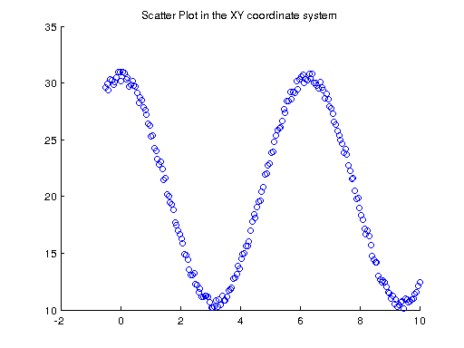 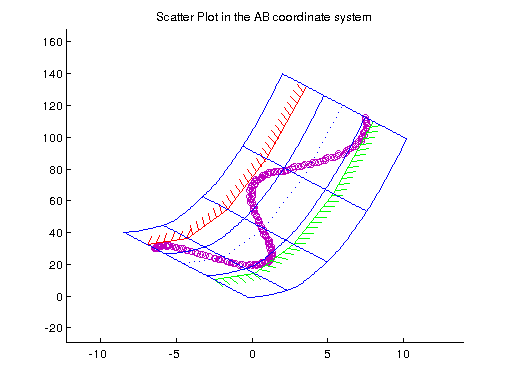
Constraint Plot with fixed Weight trade study
This is a constraint plot common in aircraft design. The fixed weights of planes with different Wingloading [W/S] and Thrust/Weight-Ration [T/W] had been take in into account. The data was created using spreadsheet calculation.
clear; clf; % Weight Estimations for different T/W and W/S TW = [0.1000 0.1200 0.1500 0.2000 0.2500 0.3000 0.1000 0.1200 0.1500 0.2000 0.2500 0.3000 0.1000 0.1200 0.1500 0.2000 0.2500 0.3000]; WS = [60 60 60 60 60 60 90 90 90 90 90 90 120 120 120 120 120 120]; G0 = 10^4*[0.9901 1.0042 1.0252 1.0603 1.0953 1.1304 0.8957 0.9097 0.9308 0.9658 1.0009 1.0359 0.8485 0.8625 0.8835 0.9186 0.9537 0.9887]; % Constraint data TW_Land = [ 0 0.0500 0.1000 0.1100 0.1200 0.1300 0.1400 0.1500 0.1600 0.1700 0.1800 0.1900 0.2000 0.3000]; WS_Land =[109.6875 109.6875 109.6875 109.6875 109.6875 109.6875 109.6875 109.6875 109.6875 109.6875 109.6875 109.6875 109.6875 109.6875]; TW_takeoff =[0 0.0250 0.0500 0.0750 0.1000 0.1250 0.1500 0.1750 0.2000 0.2250 0.2500 0.2750 0.3000 0.3250]; WS_takeoff =[0 10.7250 21.4500 32.1750 42.9000 53.6250 64.3500 75.0750 85.8000 96.5250 107.2500 117.9750 128.7000 139.4250]; TW_Cruise =[0.1000 0.1100 0.1200 0.1300 0.1400 0.1500 0.1600 0.1700 0.1800 0.1900 0.2000]; WS_Cruise =[109.0134 99.1031 90.8445 83.8565 77.8668 72.6756 68.1334 64.1256 60.5631 57.3755 54.5068]; TW_secondSeg =[0.1402 0.1402 0.1402 0.1402 0.1402 0.1402 0.1402 0.1402 0.1402]; WS_secondSeg =[60 70 80 90 100 120 130 140 150]; % Create the object and plot it o = carpetplot(TW,WS,G0); %Add some labels alabel(o,'T/W'); blabel(o,'W/S [lb/ft²]'); ylabel('G0 [lb]'); set(o,'curveFitting','pchip','bLabelSpacing',0.2); hold on; LandConstr = hatchedline(o,TW_Land,WS_Land,'r-'); TakeOffConstr = hatchedline(o,TW_takeoff,WS_takeoff,'g-'); secSegmentConstr = hatchedline(o,TW_secondSeg,WS_secondSeg,'y-'); CruiseConstr = hatchedline(o,TW_Cruise,WS_Cruise,'b-',-120); o.showpoint(0.25,105);

Contourf Plot
This example uses the simple peaks() contour and the fill style for a constraint
clear; clf; % Generate some Input Data a =[1;2;3;1;2;3]; b =[10;10;10;30;30;30]; x = b-a.^3; y = a.*b; % Create the object and Plot plotObject = carpetplot(a,b,x,y); label(plotObject,'A-Axis','B-Axis') % Change the curve Fitting and style set(plotObject,'curvefitting','pchip','style','standard','blabelspacing',0.2,'barrowspacing',0.2); % Add the contourf hold on; contourf(plotObject,1:0.1:3,10:1:30,peaks(21)); % Add some Constraints const = constraint(plotObject,'y<60 ','fill',[0.3 0.3 0.3]); const = constraint(plotObject,'y>20','hatchedline','r-',45); showpoint(plotObject,2,16); % Move the label a little bit snapnow; %Only needed for publishing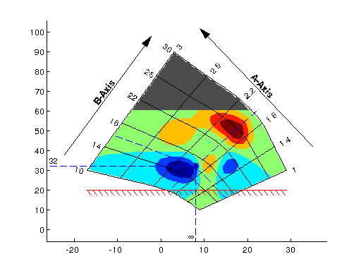